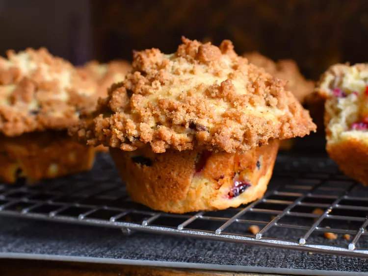

Plum Streusel Muffins

Description
Moist, plum streusel muffins with a cinnamon-y topping make for a delicious anytime treat! These muffins bake up tall, thanks to not overcrowding the pan. And while baking only 6 muffins at a time may take longer in terms of prep—the end result is worth it.
- 1/4 cup unsalted butter, melted
- 1/3 cup firmly packed light brown sugar
- 3/4 cup all-purpose flour
- 1 teaspoon ground cinnamon
- 1 pinch salt
- ...Be creative! Pick the rest yourself.
- Preheat the oven to 400 degrees F (200 degrees C). Grease or line every other muffin cup of a standard 12-cup muffin pan.
- For streusel, combine melted butter, brown sugar, flour, cinnamon, and salt in a small bowl until mixture comes together and forms crumbs. Set aside.
- For muffin batter, mix butter, white sugar, salt, cinnamon, and nutmeg together in a large bowl until combined. Add in eggs and vanilla and mix until thoroughly combined. Pour in sour cream and milk and mix until combined. Add in flour, baking powder, and baking soda and mix until almost all the way incorporated, with some dry spots of flour remaining. Add in chopped plums and fold to incorporate.
- Fill every other muffin cup of the prepared pan (so only 6 of the 12 cups) up to the top with the muffin batter. Crumble streusel topping over the top of each muffin, reserving enough streusel to bake remaining batter. Place muffin pan onto a baking sheet.
- Bake in the preheated oven until muffins are very tall, golden brown, and the tops of the muffins spring back when lightly touched, 20 to 25 minutes. Allow muffins to cool in the pan for 5 to 10 minutes before removing to a wire rack to cool completely.
- Repeat baking process of preparing every other muffin cup, filling every other muffin cup up to the top with batter, topping each with streusel, and baking until all the batter is used up.